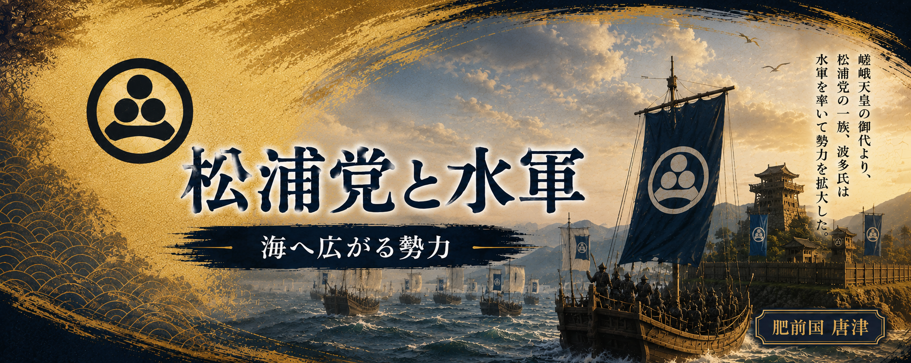

松浦党は、平安時代後期から鎌倉時代にかけて、
九州北西部を代表する武士団へと成長していきました。
源久（松浦久）が松浦の地に築いた基盤は、その子孫へと受け継がれ、
一族は各地へ広がりながら勢力を伸ばしていきます。
海に囲まれた松浦の武士たちは、優れた航海技術と操船術を身につけ、
やがて「松浦水軍」として玄界灘を舞台に活躍しました。
源平合戦や元寇など、日本の歴史を動かした数々の戦いにも加わり、
西海屈指の武士団としてその名を残します。
その後、一族はそれぞれの土地を本拠とし、土地の名を名字として名乗るようになります。
こうして生まれた武士団は、後に「松浦四十八党」と総称されました。
ここでは、松浦党と松浦水軍が歩んだ歴史をたどります。
源久（松浦久）が松浦の地に築いた基盤は、その子どもたちへ受け継がれていきました。
系図では、正・安・直・持・勝・聞・調の七人の子がいたと伝えられています。
彼らは成長すると松浦各地へ分かれ、それぞれの土地を拠点として一族を広げていきました。
その子孫は本拠とした土地の名を名字とするようになり、
松浦氏・波多氏・有田氏・山代氏・志佐氏・御厨氏・値賀氏など、多くの一族へと発展していきます。
やがて一族は松浦半島一帯へ広がり、大きく「上松浦党」と「下松浦党」の二つの流れを形成しました。
こうして松浦各地に根を下ろした武士たちは、互いに協力しながら勢力を築き、
中世九州を代表する武士団「松浦党」へと発展していきました。
その活躍は、やがて海を舞台とする松浦水軍として、日本の歴史にその名を刻むことになります。
・『松浦党関係史料集』（八木書店）
松浦党の成立と一族の展開。
・『肥前松浦一族』（外山幹夫）
松浦氏の系譜と各氏族の成立。
・『岸岳城跡Ⅰ』
松浦氏・波多氏の系譜と地域史。
※松浦氏の系譜には複数の伝承・系図があり、
本章では郷土史料や松浦党関係資料をもとに広く伝えられている説を採用しています。
平安時代の終わり頃、松浦党は松浦半島一帯に根を張る武士団へと成長していました。
松浦の地は、山だけではなく海と深く結びついた土地でした。
島々や入り組んだ海岸を知る松浦の武士たちは、
船を操り、海上交通や交易にも関わりながら力を蓄えていきます。
そして、１１８５年、源平合戦の最後の戦いとなる壇ノ浦の戦いが起こります。
この戦いは、陸だけではなく海の上で行われた大規模な戦いでした。
松浦党の武士たちも、海を知る者として源氏方に加わり、その力を発揮したと伝えられています。
海を舞台に戦う経験を積んだ松浦党は、ただの地域武士団ではなく、
海と共に生きる武士団としてさらに成長していきました。
この海との結びつきこそが、後の「松浦水軍」へと続く大きな土台となっていきます。
・『松浦党関係史料集』（八木書店）
松浦党の成立と海上活動。
・『肥前松浦一族』（外山幹夫）
松浦氏の系譜と中世松浦の歴史。
・『肥前国松浦郡史』
松浦地域の歴史と武士団の発展。
※壇ノ浦における松浦党の具体的な参戦内容については諸説あります。
本章では、松浦党が海を基盤とした武士団として発展していく流れを中心にしています。
１２７４年、元の大軍が日本へ攻め込んだ「文永の役」が起こります。
九州北部の海域は最初の戦場となり、松浦党が勢力を持つ松浦一帯や壱岐の島々も元軍の攻撃を受けました。
壱岐は大陸と九州を結ぶ海上交通の重要な場所であり、
松浦党にとっても海を行き来する重要な地域でした。
しかしこの時、その海は守るべき戦場へと変わります。
松浦党の武士たちは、海を知る者として元軍を迎え撃ちました。
元軍の圧倒的な兵力の前に苦戦し、多くの犠牲を出しながらも、命がけで海を舞台に戦い抜きました。
この文永の役で、松浦党は巨大な外敵と海上で戦う経験を得ることになりました。
この戦いで培われた海上での経験と結びつきは、 後の時代に「松浦水軍」としてさらに発展していく土台となります。
・『松浦党関係史料集』（八木書店）
松浦党の成立と中世の活動。
・『肥前松浦一族』（外山幹夫）
松浦氏と松浦地域の歴史。
・松浦市・壱岐市 元寇関連資料
元寇と北部九州・離島地域の戦い。
※文永の役では松浦党の勢力圏に近い地域も戦場となりました。
本章では個別の武将ではなく、 松浦党が海上武士団として成長していく流れを中心にしています。
１２８１年、元軍は再び日本へ大軍を送り込みました。
２度目の侵攻となる「弘安の役」です。
今回の戦場となった九州北部の海域には、
松浦党が深く関わってきた海が広がっていました。
その中でも鷹島周辺の海は、元軍と日本軍が激しくぶつかる場所となります。
松浦党の武士たちは、自分たちが知り尽くした海を舞台に戦いました。
小さな船を巧みに操り、夜の海から元軍の船へ近づき、
攻撃を仕掛けたと伝えられています。
巨大な船を並べた元軍に対し、
松浦党は海流や地形を知る強みを生かして戦いました。
これは、海と共に生きてきた武士団だからこそできた戦いでした。
弘安の役で示したその奮戦と海での経験こそが、のちの「松浦水軍」へと歴史をつなぐ大きな礎となっていきます。
・『松浦党関係史料集』（八木書店）
松浦党の成立と中世の活動。
・『肥前松浦一族』（外山幹夫）
松浦氏と松浦地域の歴史。
・鷹島神崎遺跡・元寇関連資料
弘安の役における鷹島周辺の戦い。
※弘安の役における松浦党の戦いについては、
諸史料や伝承をもとに、海上武士団としての活動を中心に構成しています。
鎌倉時代の元寇を乗り越えた後も、松浦の一族は海との結びつきを保ち続けました。
しかし、源久の時代から何代も時が流れると、
松浦党は一つのまとまった勢力ではなく、
それぞれの土地を治める多くの一族へと分かれていきます。
南北朝から室町時代に入る頃には、
松浦一族は地域ごとに力を持つようになり、
その大きな流れとして「上松浦党」と「下松浦党」が形成されました。
それぞれの一族は独自の勢力を築きながらも、
松浦の海を基盤とする武士団として活動を続けました。
海は戦いの場所であると同時に、交易や交流の道でもありました。
室町時代になると、松浦党は九州北西部を代表する海上勢力へ成長します。
源久から始まった松浦の一族は、
時代の変化の中で形を変えながら、
中世九州を代表する海の武士団へ発展していったのです。
・『松浦党関係史料集』（八木書店）
松浦党の成立と中世の発展。
・『肥前松浦一族』（外山幹夫）
松浦一族の系譜と各勢力の展開。
・『岸岳城跡Ⅰ』
松浦氏・波多氏を中心とした地域史。
※松浦党は時代とともに多くの一族へ分かれました。
本章では個別の一族ではなく、松浦党全体の流れを扱っています。